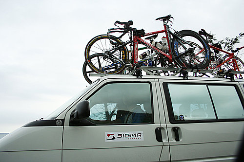
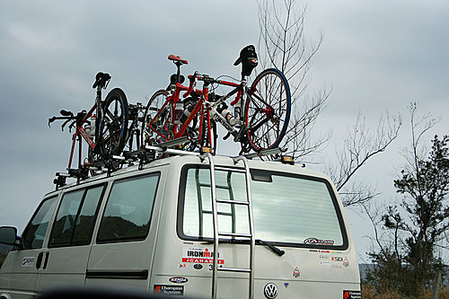
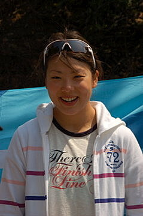
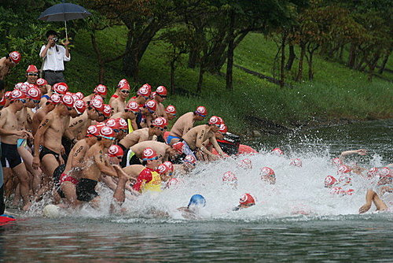
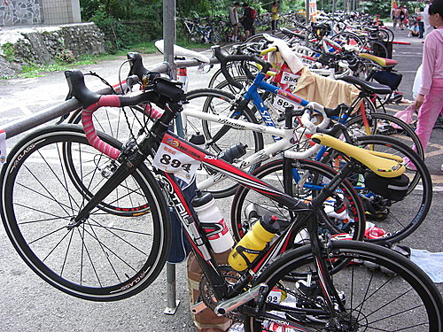
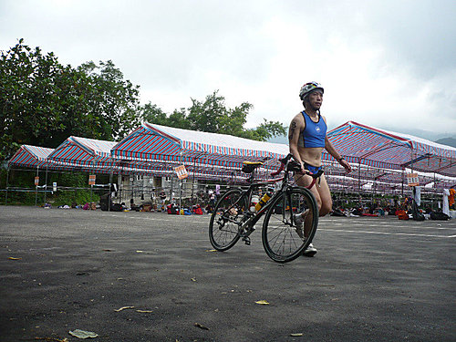
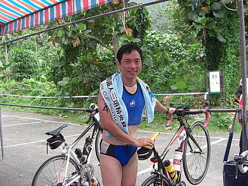
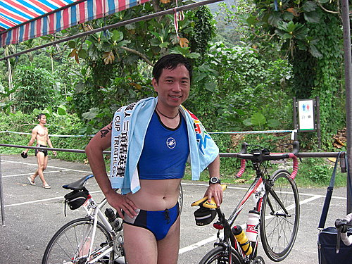

這是阿山第一次參加鐵人三項競賽，去年小揚找我參加統一盃鐵的賽的「小三鐵」（半程鐵人三項）時，阿山怕得半死，只能以羨慕眼光送小揚到日月潭參賽，在練了半年的登山車後，今年農曆年前終於下定決心買下一部公路車，也計劃年底到普吉島參加國際鐵人三項競賽（出國比賽YA），所以除了勤練體力外，也要參加國內舉辦的三鐵競賽，今年計劃的賽事如下：
1、2008來去洄瀾國際鐵人三項精英賽（5/24花蓮鯉魚潭）
2、2008年統一盃鐵人三項（7/5日月潭）
3、普吉島國際鐵人三項
帥氣的隊車，上面有IRONMAN的LOGO，第一台是隊長的賽馬，是ARGON18的頂極夢幻名車。

因為路途遙遠所以我們提早一天出發

同行有國內鐵人三項女子組冠軍可愛的鐵人之花 汪旖文，現役亞運的國手，在左營國手訓練中心集訓，她是國立東華大學畢業，所以對於花蓮鯉魚潭的地形非常熟，很感謝他詳盡介紹本次比賽自行車及跑步路線的地形及分析路況坡度，也讓我對比賽路線有初步的認識，這對初次參賽的隊友相當重要。

先來簡介一下花蓮鯉魚潭的鐵人三項項目：
競賽距離：游泳1.5公里 、自由車45公里 、跑步10公里 、合計56.5公里 。
奧運的標準三鐵是51.5公里，但花蓮三鐵為因應當地地形，不拘泥於51.5公里，特別設計自行車45公里，多了5公里，這種設計的優點是自行車可以繞大圈，不必折回，在比賽上較安全。

第一項是游泳１．５公里，在鯉魚潭比賽，單趟750m，右去左回，其實看到折返點很怕（好遠），很想借一個魚雷浮標來用，但想到鐵人賽使用魚雷浮標又覺得沒面子，只好硬著頭皮下水，我報在機關組是第五梯次下水（5分鐘一梯次），隊友一直交待我要從離水線較遠處下水，才不會擠或被選手打到或踢到（越想越害怕…嗚），又看到有選手一下水就喊「救命」…，當我下水是我已經聽到菁英組第一名已經快回到岸邊了（第一名約20多分鐘就游完了，好快…），下手後只能全力往前游（因為離水線很遠，不可能拉浮標），先用蛙式游了２００公尺，覺得還蠻順的，心想應該沒有問題了，到了折返點看到後方的選手已經不多了，應該是加油的時候了，就找到一個不錯的選手，跟著後方游，心想只要順順游完就好了，到了上岸處，後方的選手已經不多了，上岸後真的得高興，因為完賽不是問題了。

這是我的新戰馬，貼上機關組８９４的貼紙，很有殺氣。

第二項自由車45公里（２２．５公里騎２圈），當我跑到轉換區時，發現車子已經跑得剩下沒幾台了，（請注意看後方的轉換區中幾乎沒有車了），趕快穿上卡鞋先吃一包ＰＯＷＥＲ ＢＡＲ後直接上路，騎上車後覺得狀況還不錯，但因為游泳落後不少，要趕快追才行，騎到第一圈快結束時已經趕過不少選手，第一圈快結束時，發現身旁的選手速度明顯慢了下來（因為他們是第二圈了，已經在節省體力準備應付第三階段路跑，因為我還有一圈，所以就，計算一下一圈約花了４０分鐘，覺得還不錯，就順利騎完２圈。
第三項是跑步，我回到轉換區時發現同組還有不少車子還沒回來，覺得有希望，就趕快換上跑鞋準備跑步，此時發現隔壁同組的選手大叫「我的跑鞋不見了，急死人了」，（心想：又少一個對手了…嘻），但又聽到：「不管了，打赤腳跑了」，就看他直接赤腳跑出去後，接著看到一個小朋友穿著一雙大人的跑鞋走進來邊說，爸爸的鞋子好好玩…○○ＸＸ（好像是他兒子穿爸爸的跑鞋出去玩），我就不管了，換上跑鞋就衝出去了，但跑錯方向，因為跑步是跟自行車不同方向，工作人員叫我回頭，我才開時到感應區起跑，剛開始覺得腳有一點不舒服，但跑了２公里後覺得不痛了，因為路跑的路線是繞著鯉魚潭跑，風景很美麗，雖然有上下坡，但坡度不大，而且愈跑愈順，一路上看到有不少選手用走的，但我覺得若有餘力應該力行馬拉松的精神，全程用跑的，開始追過不少選手，其中有不少是同組的選手，心想應該可以進入分組前１０名了。

完賽的喜悅是無法形容，也希望有更多朋友能夠親身體驗，同行的隊友在完賽後就一直跟我說：「真的太辛苦了，不好玩…」，但是當天鐵人之夜時，我居然聽到他已經預繳報名費，報名明年的花蓮三鐵賽，實在太誇張了，隊長說參加鐵人賽就像用嗎啡一樣，一次就會上癮（其實醫學上也證明運動時身體會分泌腦內啡），那是真的。

成績公布：
組別 : 男機關組
Order Name Age BIB City Score Swim Score(Order) Bike Score(Order) Race Score(Order)
名次 姓名 年齡 BIB 縣市 總成績 游泳成績(名次) 自行車成績(名次) 路跑成績(名次)
----- ----------------------- ---- ----- -------- -------- -----------------------------------------------------
1 謝忠德 18 896 花蓮市 02:58:03 00:37:36 ( 3) 01:24:33 ( 1) 00:55:54 ( 1)
2王漢章 18 892 花蓮市 02:58:32 00:37:17 ( 2) 01:24:46 ( 2) 00:56:29 ( 2)
3 劉煥林 18 888 花蓮市 03:21:29 00:42:38 ( 6) 01:38:16 ( 5) 01:00:35 ( 3)
4 羅兆恭 18 895 花蓮市 03:23:47 00:36:51 ( 1) 01:42:04 ( 6) 01:04:52 ( 4)
5 顏郁山 18 894 花蓮市 03:29:10 00:52:21 ( 9) 01:30:18 ( 3) 01:06:31 ( 5)
6 許中和 18 886 花蓮市 03:31:15 00:45:22 ( 8) 01:34:17 ( 4) 01:11:36 ( 6)
7 楊莊乾忠 18 893 花蓮市 03:42:43 00:38:55 ( 5) 01:50:03 ( 7) 01:13:45 ( 7)
8 莊正泰 18 887 花蓮市 03:52:57 00:38:42 ( 4) 01:59:02 ( 9) 01:15:13 ( 8)
9 黃泰日 18 890 花蓮市 03:54:26 00:42:50 ( 7) 01:53:20 ( 8) 01:18:16 ( 9)
參賽心得：
本次鐵人三項比賽機關組共有１６名選手報名，我獲得分組第５組，對於第一次參加鐵人比賽的我，是一項肯定，也希望能夠每年繼比賽三鐵，比到６０歲時，應該就可以得牌了。
鐵人三項看似很難，但因為三項中游泳、自行車、跑步所使用之肌肉群不同，所以不會像自行車賽激烈，而且三鐵比較像是跟自已的比賽，不像公路車有集團摔車的危險，同隊中有一些鐵人前輩，已經有十年的參賽經驗，但每年都抱著跟自已比賽的心情參賽，當成是年度自我體能檢視（類似年度健康檢查），這也是不錯的一種心態，提供參考。
本次比賽自由車路線規劃很棒，在風景優美的鯉魚潭週圍公路騎車，真是人生一大享受，主辦單位細心的路線規劃及嚴密的交通管制，讓選手可以在安全的環境下參賽，這是值得肯定的，所以鐵人前輩常建議新手以花蓮鯉魚潭或是台東三鐵賽當成初次參賽的選擇。
至於有同好問我一個問題，參加三鐵比賽是否一定要準備公路車，其實三鐵比賽中之自行車項目並沒有強制規定一定要騎公路車，在本次比賽也看到有不少選手騎登山車，甚至騎小折車，但應該看參賽者的心態，若抱著只要完賽的體驗鐵人心情參賽，其實騎登山車並無妨，但當你的體能到達一定程度（或是本身基礎體能就不錯）時，在騎自行車時看到其他選手一路從身旁超車，心情一定不是滋味，所以對於第二次參加鐵人賽的朋友（像是小揚），我一定強烈建議要換公路車，因為就我們而言，參加鐵人競賽無非是要自我肯定（因為要得名次的機會不大），既然為了要自我肯定，當一路被其他選手超越時，反而是自我否定，在我的鼓吹之下，也恭喜小揚也敗了一部公路車新戰馬，預祝小揚在統一盃能夠獲得好成績，最重要是大家一起來運動，保持健康好身材。
恭賀河東獅之技術總監阿山哥， 以機關組第5名的優異成績， 勇奪2008鯉魚潭鐵人三項錦標賽。 且依你準備賽事不到1年時間， 就有如此佳績， 相信必能為車隊帶來莫大鼓舞， 社團理監事會議， 打算提名你兼任本車隊鐵人三項的技術總監哦！ 

顏檢你練功的精神真是沒話說,從"洛基"變成"跑山基",真有你的!雄大港眾兄弟對你英姿無不讚歎佩服,美女們更是哨音群起,驚聲連連,不過相片裡的小蠻腰,略顯蒼白,可能光線有點問題,本人雖作以上解釋,眾人還是面帶疑惑,近日下班柴山練騎前,可否著該勁裝先至本局,以正視聽. 啟仁
顏檢你練功的精神真是沒話說,從"洛基"變成"跑山基",真有你的!雄大港眾兄弟對你英姿無不讚歎佩服,美女們更是哨音群起,驚聲連連,不過相片裡的小蠻腰,略顯蒼白,可能光線有點問題,本人雖作以上解釋,眾人還是面帶疑惑,近日下班柴山練騎前,可否著該勁裝先至本局,以正視聽. 啟仁
郁山：真不知你是好友還是損友，在你不斷勸說下，竟然砸錢敗了一台905，要是我練不到你 哪種小腹（我在20年前也有那種小腹過），你可要賠我一半金錢，以賠償我的精神損 失，不過還是希望在你帶領下，騎腳踏車功力能逐步精進，眼前最大願望就是希望能 在日月潭鐵人三項順利完賽，而且一定要on time。 小揚
阿山哥， 果然是運動維持好身材，看你穿三鐵服，刻意露出的小蠻腰，真的太有說服力了！我也正考慮要買一部公路車！ 小超